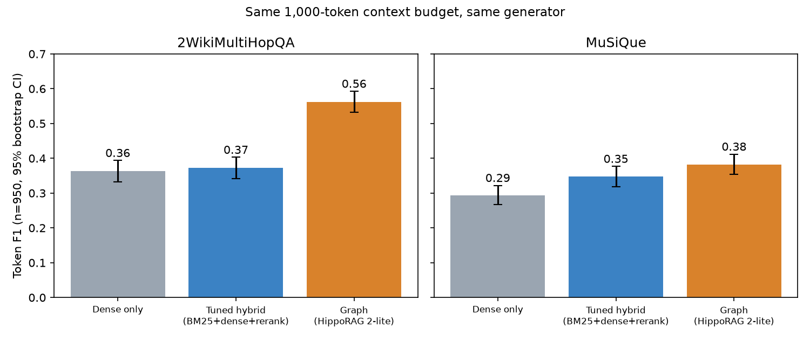
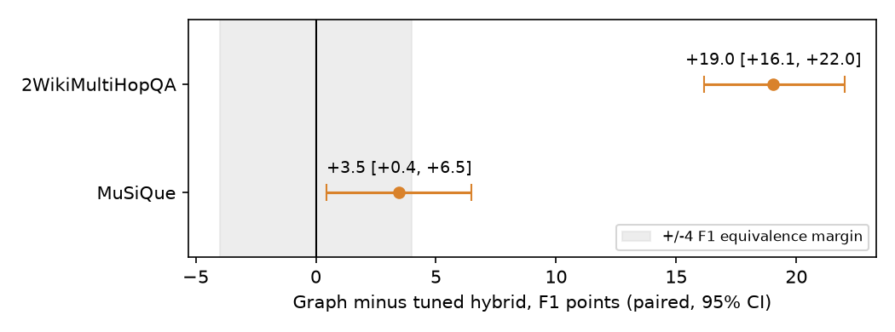

If you build retrieval-augmented generation (RAG), you have seen the pitch for graph-based retrieval: extract entities and relations from your documents, build a graph, and multi-hop questions get answered better. Most papers compare the graph method against a plain dense retriever, and plain dense retrieval is not what a careful team ships. A careful team adds keyword search, fuses rankings and reranks.
So I asked a narrower question. If a graph method and a properly tuned hybrid retriever hand the generator the same amount of context, how much of the graph's advantage is left?
I ran a small pre-registered experiment: hypotheses, metrics and decision rules written down before the results existed. This is an honest write-up, including what I could not finish.
Why this matters if you build RAG
Graph indexing is not free: an LLM pass over your whole corpus, a graph to maintain, more to debug. If a tuned hybrid retriever gets you most of the way, you can skip all that. "Better than dense" is the wrong bar; the useful bar is "better than the baseline I would actually deploy."
The setup
Data. Two public multi-hop question sets, MuSiQue and 2WikiMultiHopQA (2Wiki), using the 1,000-question samples and pooled passage corpora from the HippoRAG 2 paper (11,656 passages for MuSiQue, 6,119 for 2Wiki). Retrieval searches the whole pooled corpus.
Arms, all with the same generator and the same context budget.
- Dense only, using the open
bge-smallembedding model. - Tuned hybrid: BM25 keyword search and dense search fused with reciprocal rank fusion, then reranked with a cross-encoder (
bge-reranker-base). Its settings were fixed in advance and not tuned on the evaluation questions. - Graph: my lightweight re-implementation of HippoRAG 2 (extracted triples, a graph, personalised PageRank over it). I call it "HippoRAG 2-lite" because it skips the query-time LLM step that filters triples.
- BM25 alone and a no-context control.
Matched budget. Every arm gets at most 1,000 tokens of context, filled with whole passages in rank order. The generator was Claude Sonnet 5.5, with a prompt that says to answer briefly or say "unanswerable". The refusal option matters; more below.
How I score. Three terms, one line each:
- Token F1: the standard SQuAD word-overlap score between the answer and the gold answer; 1.0 is a perfect match, 0 is no overlap. I report differences in points (0.19 = 19 points).
- Bootstrap confidence interval (CI): I resample the questions 10,000 times and take the middle 95% of the results, which shows how much the number would move on a different set of questions. "Paired" means both methods are scored on the same questions, so I bootstrap the per-question difference.
- TOST (two one-sided tests): a standard way to show two methods are "equivalent", meaning the difference sits inside a margin you chose in advance (I chose plus or minus 4 F1 points, widened from 2 after the pilot because 2 was untestable at this sample size; the published 2.9-point gap sits inside it). TOST checks the 90% interval against the margin. Failing to find a difference is not showing there is none; TOST can show "close enough".
The confirmatory sample is 950 questions per dataset: the first 50 informed my design decisions, so they are excluded.
Results
| Retriever (1,000-token budget) | MuSiQue F1 | 2Wiki F1 |
|---|---|---|
| No context | 0.005 | 0.000 |
| Dense only | 0.294 | 0.363 |
| BM25 only | 0.218 | 0.341 |
| Hybrid (fusion only) | 0.296 | 0.379 |
| Tuned hybrid (fusion + rerank) | 0.348 | 0.372 |
| Graph (HippoRAG 2-lite) | 0.382 | 0.562 |

The comparison that matters is graph minus tuned hybrid:
- 2Wiki: +19.0 F1 points, 95% CI [+16.1, +22.0]. The graph wins, clearly.
- MuSiQue: +3.5 points, 95% CI [+0.4, +6.5]. Probably a small graph edge, but the equivalence test was inconclusive: the data could neither show the two are within 4 points nor that the graph is more than 4 points better.
My registered rule for dropping the "graph is overrated" angle required the graph to win by more than 5 points, with the 95% interval's lower bound above zero, on both datasets. It did not, on MuSiQue. My hypotheses that the tuned hybrid is enough were not supported either. So the verdict is iterate: neither side of my original question is settled.
What surprised me

1. The tuned hybrid helped on one dataset and did nothing on the other. On MuSiQue the full tuned hybrid added 5.4 points over dense (CI +2.9 to +7.9), almost all of it from the reranker. On 2Wiki it added 0.9 points (CI -0.7 to +2.5), indistinguishable from zero. For 2Wiki I had registered that a tuned hybrid would close at least half the gap between dense retrieval and the graph. It closed about 5% of it. (On MuSiQue the same share was 61%, but there I had registered a different hypothesis, so treat that as descriptive.)
2. The graph's win is not uniform. In an exploratory split by 2Wiki question type (registered as exploratory only, so treat it as a lead, not a finding), the graph was ahead by 25 to 28 points on compositional, bridge-comparison and inference questions. On plain "comparison" questions (n=232) the hybrid was better by 6.5 points. The graph helped on questions that chain facts, not on direct side-by-side comparisons.
3. The graph found more of the evidence inside the same budget. On 2Wiki, the share of supporting passages that made it into the context was 0.87 for the graph and 0.71 for the tuned hybrid. On MuSiQue it was 0.61 versus 0.60. The 2Wiki gap looks like a retrieval effect; I did not isolate it.
4. Evaluation hygiene nearly bit me. In the pilot, a "give your best guess" prompt lets the model answer many questions from memory, because both datasets are built from Wikipedia. Under the refusal prompt I used for the real run, F1 on questions whose context did not contain the gold answer stayed between 0.000 and 0.033 for every arm, well under my threshold of 0.10. In the pilot, the same statistic under the guess prompt was 0.35 to 0.53, which would have failed it. If you evaluate RAG on Wikipedia questions, measure this.
5. Cost: the premium is small in dollars, but the picture depends on a step I did not run. Graph indexing cost about $3.18 (MuSiQue, from the paper's published token counts) and $4.47 (2Wiki, measured) at a cheap reference API rate. As run, per-query cost is about the same for both, so the premium only shrinks relative to total spend: it falls below 10% of the hybrid's total after roughly 212,000 (MuSiQue) or 331,000 (2Wiki) queries (a summary I registered myself, not a standard metric). But the real HippoRAG 2 filters triples with an LLM call at query time. I estimated that cost from the paper's prompt without running it, and with it the graph's per-query cost exceeds the hybrid's, so that volume is undefined. Treat the cost story as an estimate.
Limits, stated plainly
- Context sizes were not identical. Mean context was within 15% across arms except on 2Wiki, where the graph averaged 755 tokens against 900 for BM25 (16%). I flag it rather than hide it.
- One generator. Everything uses Claude Sonnet 5.5, one generation per question, no temperature control. A different generator may change the gaps. Between 33% and 65% of answers were refusals, so F1 partly measures whether retrieval supplied enough to answer.
- Two datasets, both Wikipedia-derived, and a small budget (no repeated runs). I would not extend these results to your help-center articles or contracts.
- The graph arms are not built the same way. The MuSiQue graph uses the HippoRAG authors' precomputed extraction (gpt-4o-mini). I built the 2Wiki graph with Claude Sonnet, the same family as the generator. That could favour the graph on 2Wiki, and the datasets are not cleanly comparable.
- No query-time triple filter, and a small embedder (not the paper's large one), which weakens the dense and hybrid arms.
- The MuSiQue result is underpowered. The equivalence test could not give an answer, and at the observed variation its power was roughly two thirds. A larger sample might resolve it.
- Two commitments I did not meet. I had registered a second look at a 2,000-token budget, and a measurement of how often the generator fills gaps from memory under the guess prompt. Neither was run. Both need thousands more generator calls. My original protocol said an "iterate" verdict means adding the 2,000-token budget; after seeing a preview of the headline numbers I wrote down that it would run only on "scale". That was a post-hoc call. At 1,000 tokens the gold answer was in context for only 37 to 56% of MuSiQue questions (59 to 86% on 2Wiki), so every conclusion is conditional on that budget.
- One protocol file was frozen late. An amendment (dropping the 50 design questions, adding cost reporting) was drafted before any results but frozen after the runs finished. Nothing changed after the data existed and no result had been read at freeze time, but it is a hole in the pre-registration.
What I would take from this
If your questions are multi-hop and compositional, a tuned hybrid retriever is not a free substitute for a graph method, at least in this setup. If your questions look like MuSiQue's, the evidence for paying the graph's complexity is thin: a small edge with a wide interval. Either way, measure on your own data against the baseline you would really deploy.
What's next
I am iterating, not scaling. Next, most likely: run the 2,000-token budget check for the graph and tuned hybrid; run the real query-time triple filter so its cost is measured rather than estimated; then try a corpus that looks like documentation instead of Wikipedia.